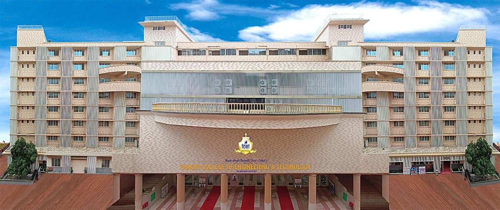
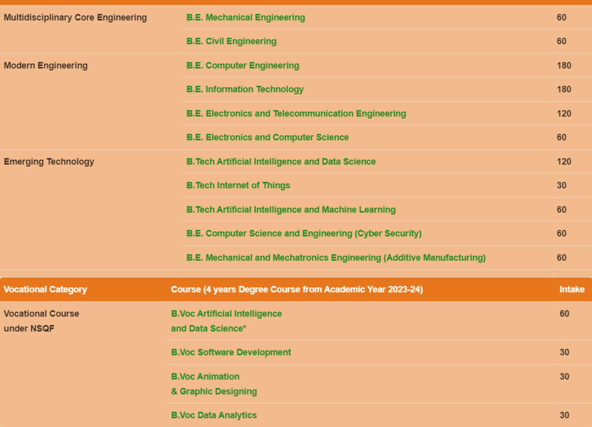
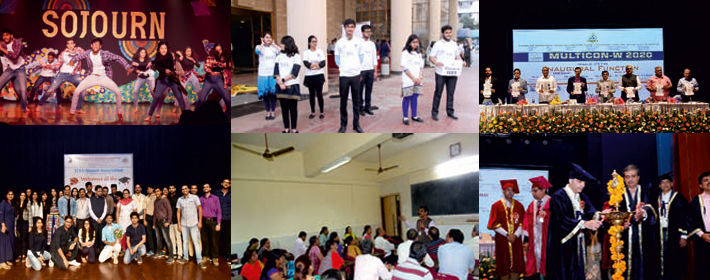
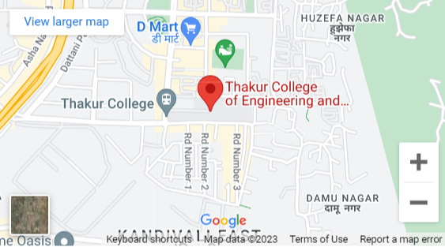

Thakur College of Engineering & Technology (TCET), a Graded Autonomous Linguistic Minority Institute, was established in AY 2001-02 with a clear objective of providing Quality Technical Education in tune with international standards and contemporary global requirements. The Institute is recognized by All India Council for Technical Education (AICTE) & Government of Maharashtra and is affiliated to the University of Mumbai (UOM). It has been conferred Autonomous Status by University Grant Commission (UGC) for 10 years w.e.f. A.Y. 2019-20 to A.Y. 2028-29. TCET offers 15 UG (8 in Engineering, 3 in Technology and 4 in Vocational Course), 3 PG and 3 Ph.D. (Tech.) programmes. TCET is ISO 9001:2015 certified Institute. Certification has helped Institute to develop a process driven student centric system required for quality education in 21st century. Institute is accredited by NAAC with “A” grade for seven years and 4 engineering programmes (COMP, IT, E&TC and ELEX) are accredited by NBA (Multiple Accreditation cycles) for three years till 2022. The first 3 programmes are also given permanent affiliation w.e.f. A.Y. 2015-16 and the fourth one has been given permanent affiliation w.e.f. A.Y. 2017-18. TCET has implemented Holistic Multidisciplinary Education which is as per National requirement in building the budding Engineers for Global opportunities
You should wear formals while attending all our courses because we want to train you for corporate life
Thakur College of Engineering & Technology (TCET) since its inception has been instrumental in offering quality technical education to aspiring students through System-Driven-Student-Centric approach. In the last decade, the TCET has put its best efforts to focus on broad based education leading to holistic development of students as per international graduate attributes. TCET aspires to strengthen its programme offerings to make its graduates “Globally Competent, Locally Relevant and Skill Oriented.” The Choice-Based-Credit-Grading System for Holistic and Multidisciplinary Education (CBCGS- HME 2020) is based on AICTE model curriculum and UGC (Minimum standards of instruction for grant of First Degree through Formal Education) Regulations, 2003. Autonomy Scheme includes Scholastic, Co-scholastic and Non-scholastic Credits, which are Compulsory for every student. Additional Credits are assigned under Specialization (optional credits in Emerging Areas).
The curriculum focuses on mental health promoting Holistic Student Development (HSD) which includes courses on Professional skills which focus on Basic Technology skills for second year, Industry/ Research/ Entrepreneurship skills for Third year and Final year. Project Based Learning (PBL) is made common for SE, TE, BE under HSD along with ABL (Co-curricular/ Extra-curricular/ Extension) for FE and SE students and RBL (Online/ MOOCs) for TE and BE students. The students are also encouraged to take up Internships at core companies which would enhance their skills and make them updated with the current industry needs.
The academics for S.E. to B.E. start from July and for F.E. starts from August every year. Academic year is divided into two semesters. Each semester is of six months and instructions are conducted for 15 weeks per semester.
Semesters are divided into odd and even semesters.
Odd semester includes I, III, V & VII and are conducted from July to December. Even semester includes II, IV, VI & VIII and are conducted from January to June. To conduct the session, institute prepares its own academic calendar which is notified on institute notice board and upon web site. Academic activities during the semester includes:- Theory / Practical / Tutorial/HSD sessions as per academic timetable displayed before the commencement of semester. During the semester, students need to undergo continuous evaluation in the form of the timely completion of formative assessments, preparing laboratory journals, In-Semester Examination etc. At the end of each semester, there is End semester examination and to appear in the same, the students must have à minimum 75% of attendance in every subject and à complete term work requirement satisfactory at the end of the term Academic conduct is taken care by the respective academic department for SE to BE and for FE is taken care by H&S Department.
We are easily reachable via train, bus or private vehicles.
